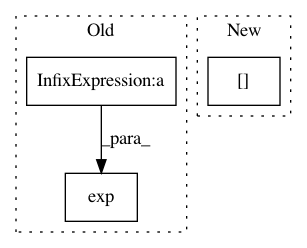

8f25ab9c44a36cf02fb050b3294fa6583d33946a,librosa/segment.py,,recurrence_matrix,#,52
Before Change
if sym:
R = R * R.T
elif mode == "gaussian":
R = np.exp( -0.5 * D / k)
return R
def structure_feature(R, pad=True):
After Change
or if mode is not one of {"knn", "gaussian"}
"""
t = X.shape[1]
if isinstance(k, float):
if 0 < k < 1:
k = np.ceil(k * t)
In pattern: SUPERPATTERN
Frequency: 4
Non-data size: 3
Instances
Project Name: librosa/librosa
Commit Name: 8f25ab9c44a36cf02fb050b3294fa6583d33946a
Time: 2013-09-25
Author: brm2132@columbia.edu
File Name: librosa/segment.py
Class Name:
Method Name: recurrence_matrix
Project Name: broadinstitute/keras-rcnn
Commit Name: 637ecf5877bbd6647caef2bd64925e66a586fb29
Time: 2018-01-30
Author: allen.goodman@icloud.com
File Name: keras_rcnn/layers/losses/__init__.py
Class Name: RCNN
Method Name: regression_loss
Project Name: rflamary/POT
Commit Name: 6aa0f1f4e275098948d4b312530119e5d95b8884
Time: 2020-03-31
Author: ievgen.redko@univ-st-etienne.fr
File Name: ot/da.py
Class Name:
Method Name: jcpot_barycenter
Project Name: r9y9/nnmnkwii
Commit Name: b956d586d8fdb50e60a310315264ff4ee82b35aa
Time: 2017-09-27
Author: zryuichi@gmail.com
File Name: nnmnkwii/preprocessing/modspec.py
Class Name:
Method Name: modphase